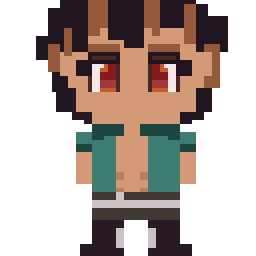
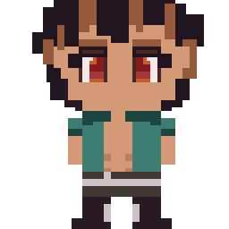
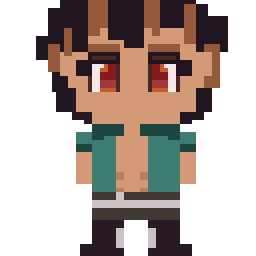

Here, you may find all of my artwork that I considered worthy of putting in a website.
Starting off with the art I am most proud of, a classical background that gives me the creeps but makes me wonder why did I decide to put one singular car in the middle. Perhaps it was to showoff the peaceful nature of coming back home from work/school, expecting a nice table ready to serve dinner, and a cozy atmosphere after a long, stressful, perhaps maybe even fun day and definitely expecting a celebration to a day that almost comes to an end that lacks some kind of a reward.
This art was used as a background in a game project me and my friends worked on together. For more information, please refer to my github, the mirro repository.

Here are my original characters created and used for the game. First one is Mirro, the main character. Next, is the old man, then the bodyguard, then Mirro's father. Yeah, we pretty much didn't bother about the names. The weirdness of the father comes from 1. His nature, 2. His balding genes. It was really fun creating pixel art.
